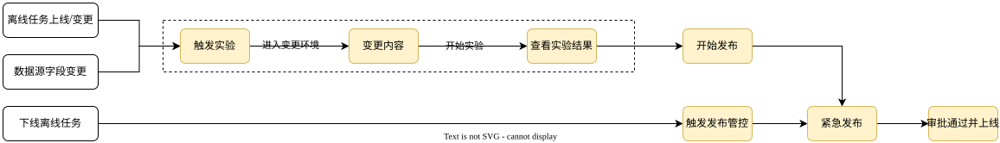
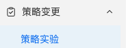
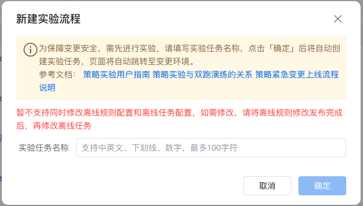
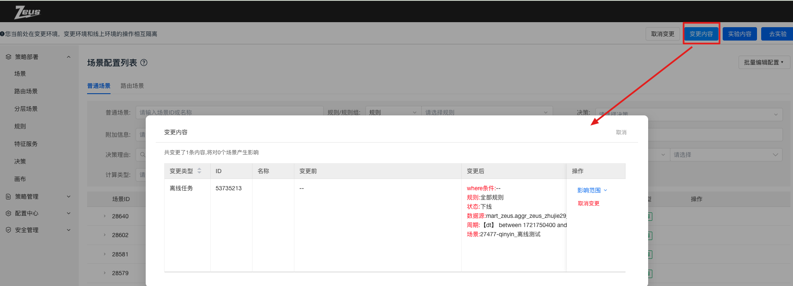
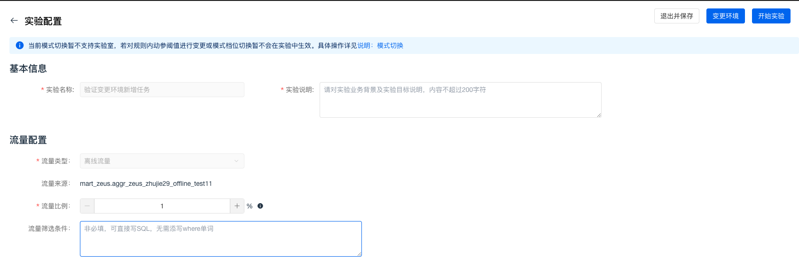
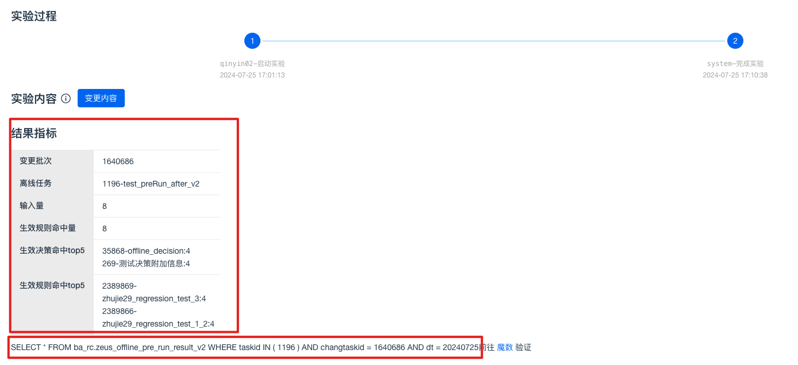
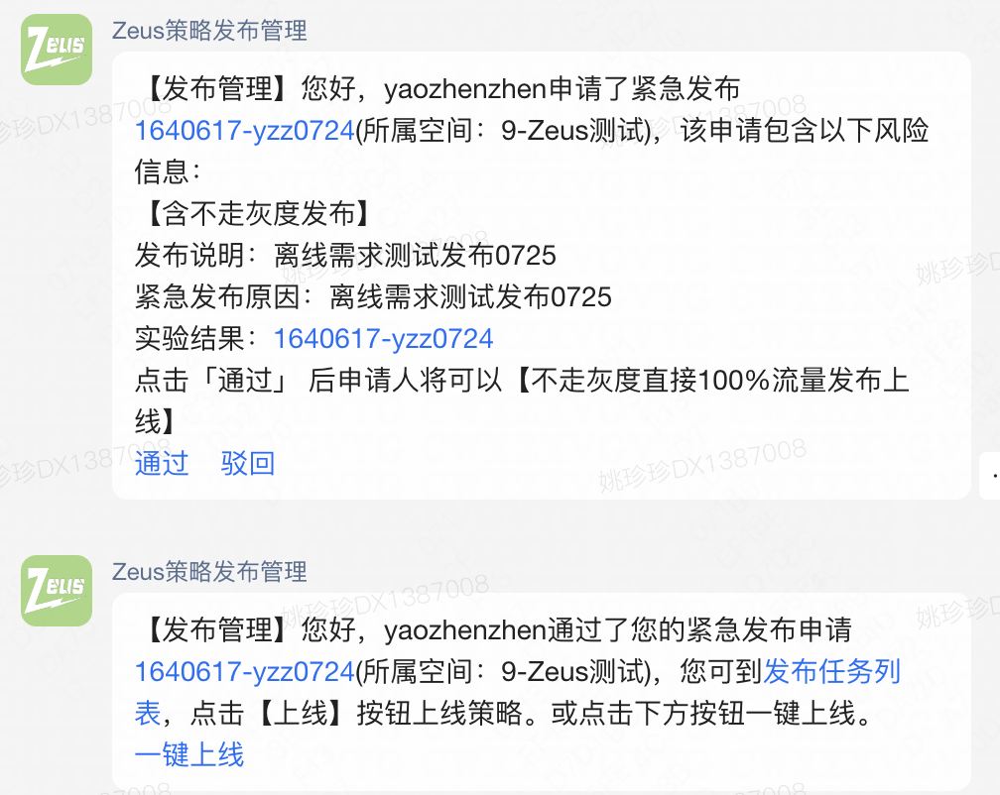
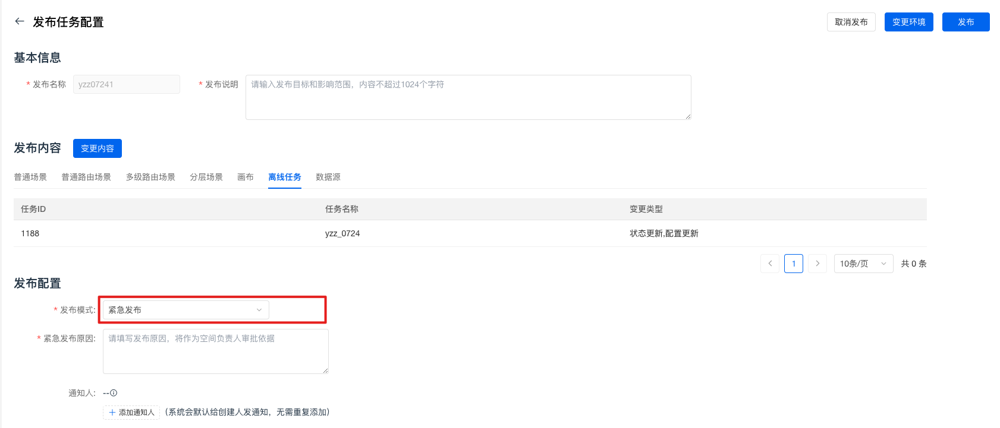

说明：离线引擎变更验证V2
一、背景
- 离线引擎上线后，被越来越多的风险域使用，尤其是账号风险域的流量在快速增长，策略布控安全性日益凸显
- 离线任务的任何变更，都是立即生效，无验证、审批等安全保障能力
二、系统流程

三、概念说明
实验：当任务信息产生变更后，可从变更环境执行修改后的最新配置，但执行结果不会下发决策数据，仅供验证；正式上线后，需要线上调度成功，才能下发决策数据。
发布：当变更验证符合预期后，提交发布，由相关负责人进行审批，方可正式生效；离线任务当前只支持紧急发布，暂无任务灰度能力。
四、操作说明
|
流程节点 |
说明 |
截图 |
|---|---|---|
|
触发实验 |
主动：策略变更--策略实验 被动：
不支持同时修改离线规则配置和离线任务配置，如需修改，请将离线规则修改发布完成后，再修改离线任务 填写实验任务名称后，进入变更环境↓ |
主动入口：  被动入口提示：  |
|
变更环境 |
进入变更环境后，在线上修改的内容无法直接携带过来，需要在变更环境中操作保存，可在【变更内容】中核实是否符合预期 确认修改完成后，点击【去实验】↓ |
 |
|
开始实验 |
流量来源：实验任务会默认拉取受影响的任务数据源，无需手动填写 流量比例：默认是1%，如果想要完全还原线上执行结果，可调整到100% 流量筛选条件：即where条件，可从其他维度筛选流量执行离线任务 确认修改完成后，点击【开始实验】，等待实验结果↓ |
 |
|
查看实验结果 |
前往【策略实验】列表，点击查看对应实验任务的【实验结果】
确认结果符合预期后，回到列表，点击【去发布】，创建发布任务↓ |
 |
|
发布 |
当前离线任务不具备「灰度发布」能力，预计Q4支持 当前仅支持「紧急发布」，填写原因后，点击【发布】即可，审批机制同实时引擎，空间负责人审批通过后，可在发布列表点击【上线】  |
 |
发布管控信息可查看发布管控用户指南